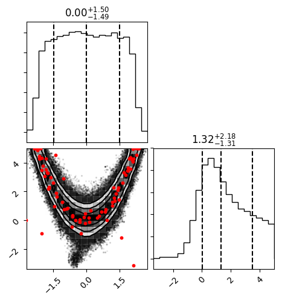

Tutorial¶
Below is a quick example of how to use approxposterior to compute the posterior
distribution of the Rosenbrock Function example from Wang & Li (2017) using the
BAPE algorithm. Note that setting verbose = True also outputs additional diagnostic information, such as when
the MCMC finishes, what the estimated burn-in is, and other quantities that are useful for tracking the progress of
your code. In this example, we set verbose = False for simplicity.
- First, the user must set model parameters.
# Define algorithm parameters
m0 = 50 # Initial size of training set
m = 20 # Number of new points to find each iteration
nmax = 2 # Maximum number of iterations
bounds = ((-5,5), (-5,5)) # Prior bounds
algorithm = "BAPE" # Use the Kandasamy et al. (2015) formalism
# emcee MCMC parameters
samplerKwargs = {"nwalkers" : 20} # emcee.EnsembleSampler parameters
mcmcKwargs = {"iterations" : int(2.0e4)} # emcee.EnsembleSampler.run_mcmc parameters
- Create an initial training set and gaussian process
# Sample initial conditions from the prior
theta = lh.rosenbrockSample(m0)
# Evaluate forward model log likelihood + lnprior for each theta
y = np.zeros(len(theta))
for ii in range(len(theta)):
y[ii] = lh.rosenbrockLnlike(theta[ii]) + lh.rosenbrockLnprior(theta[ii])
# Create the the default GP which uses an ExpSquaredKernel
gp = gpUtils.defaultGP(theta, y)
- Initialize the
approxposteriorobject.
# Initialize object using the Wang & Li (2017) Rosenbrock function example
ap = approx.ApproxPosterior(theta=theta, # Initial model parameters for inputs
y=y, # Logprobability of each input
gp=gp, # Initialize Gaussian Process
lnprior=lh.rosenbrockLnprior, # logprior function
lnlike=lh.rosenbrockLnlike, # loglikelihood function
priorSample=lh.rosenbrockSample, # Prior sample function
algorithm=algorithm, # BAPE, AGP, or ALTERNATE
bounds=bounds) # Parameter bounds
- Run!
# Run!
ap.run(m=m, nmax=nmax, estBurnin=True, nGPRestarts=1, mcmcKwargs=mcmcKwargs,
cache=False, samplerKwargs=samplerKwargs, verbose=True, onlyLastMCMC=True)
- Examine the final posterior distributions!
# Check out the final posterior distribution!
import corner
# Load in chain from last iteration
samples = ap.sampler.get_chain(discard=ap.iburns[-1], flat=True, thin=ap.ithins[-1])
# Corner plot!
fig = corner.corner(samples, quantiles=[0.16, 0.5, 0.84], show_titles=True,
scale_hist=True, plot_contours=True)
fig.savefig("finalPosterior.png", bbox_inches="tight")
The final posterior distribution will look something like the following:
{kind=link}
Check the notebook below to see MCMC sampling with using the Rosenbrock function and emcee.
Jupyter Notebook Examples: